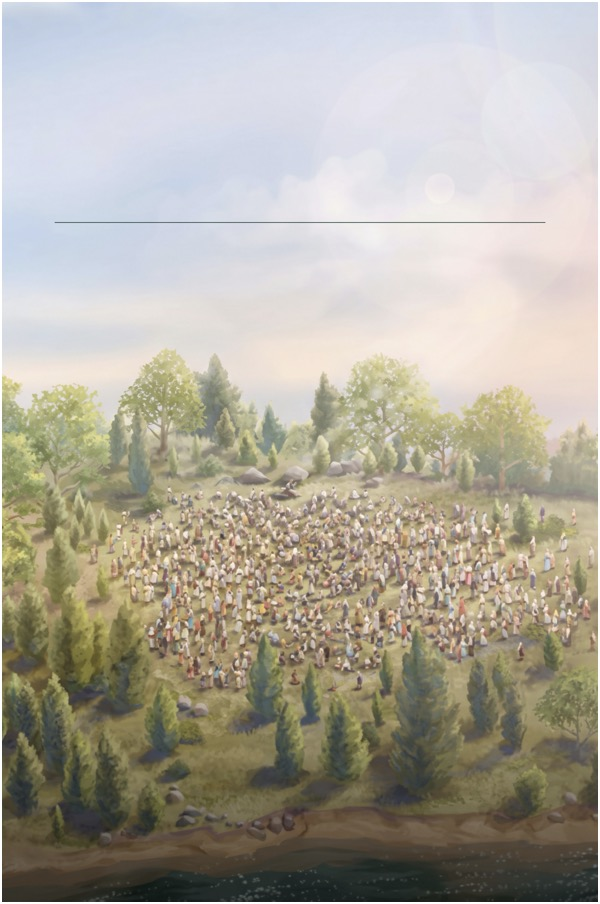

Welcome, Dear International Delegates!
We open our hearts and extend our arms in warm Christian love as we welcome you to the “2026 Eternal Happiness” International Convention. Whether you have traveled across oceans or continents, we rejoice to have you with us in sunny San Diego! We are happy you are here!
“Happy are your eyes because they see and your ears because they hear.”
— Matthew 13:16
Welcome to the San Diego “Eternal Happiness”
International Convention! (Isaiah 26:7)
Convention Preparation & Highlights
San Diego International Convention Preparation & Highlights video.
Convention Venue
San Diego Convention Center
Nov 27–29, 2026
The San Diego Convention Center is the official gathering place for the “Eternal Happiness” International Convention of Jehovah's Witnesses, taking place November 27 thru 29, 2026.
JW.ORG Convention Program
Access the convention daily programs, convention releases, music and spiritual encouragement in hundreds of languages

NW JoyBridge Support for Delegates
Join our dedicated ESMCHDelegatesSupport WhatsApp group for hospitality updates, local assistance, and friendly fellowship.
Choose a Language
Select a delegate's language to begin communicating